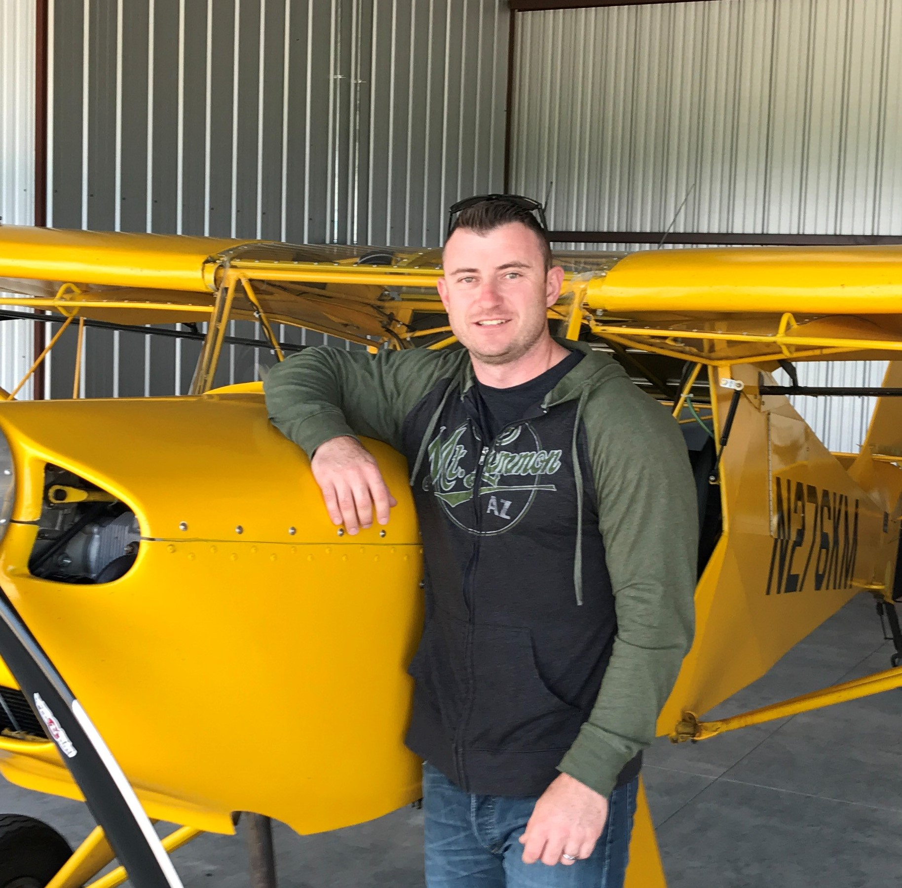

Allen Craig

TheMightyCraig@gmail.com
Find me on GitHub
(801)822-7115
Skills
- Current languages include JAVA, HTML, CSS, JavaScript, React.js, and MySQL.
- Passionate about Fundamental OOP concepts, algorithms and design, and learning.
- Skilled in writing clean and scalable code for web sites, services, and applications
- Experienced with Java object-oriented programming techniques, Java-driven database (SQL) software development and Project-based development methodologies including Agile and team coding tools.
- Developed applications with Compilers, Scripting languages, Frameworks, Version control software and APIs.
- Proficient with Microsoft, AutoCad Electrical, RSLogix5000 and Factory Talk Studio.
Experience
Building Control Systems 2020 to 2021
- Lead technician working with building controls and automation, including HVAC, lighting, security, fire, access control, maintenance, and life safety.
- Installed, maintained, and programmed controllers/processors using the open data communications protocol
BACnet (Building Automation and Control Network).
Apex Refrigeration 2014 to 2020
- Lead PLC technician using Rockwell based software for PLCs, HMIs, and SCADA programs for process control applications.
- Wrote code for PLCs ranging from simple boolean expression to complex Proportional-Integral-Derivative loops.
- Designed all schematics to scale using AutoCad Electrical, all drawings followed strict guidelines and were auditied by Underwriters Laboratories Inc.
- Worked alongside customer top executives, engineers, and local community leaders(fire marshal) from various cities to develop and review software safety protocols native to site facilites.
S.T. Mechanical Contractors 2010 to 2014
- Lead HVAC technician servicing, installing, and maintaining commercial and residental HVAC systems.
- Supervised light commercial and residential remodeling projects.
Gruber Power Services 2009 to 2010
- Electrical Technician, maintained, inspected, and troubleshot energy transmission systems.
- Repaired commercial and industrial electrical equipment and replaced faulty components.
United States Air Force 2004 to 2009
- Aerospace Ground Equipment Journeyman qualified and in possession of AFSC 2A652.
- Experienced performing or supervising functions such as inspecting, modifying, repairing, or troubleshooting AGE.
- Used automated maintenance system to maintain records and documentation.
Licences/Certifications
- Java boot-camp certification.
- Aerospace Ground Equipment Journeyman (2A652).
- Mechanical Journeyman license(city of Phx).
- Gas Fitter Journeyman license(city of Phx).
- EPA section 608 Universal certification.
- Frick/Johnson Controls manufacture certification
- OSHA 10 Hour and Level 1 HAZMAT (First Responder Awareness)
Education
- Air University CCAF (53 credits)
- George Brown College (PLC Tech 2)
- Grand Canyon University (Java Programming)